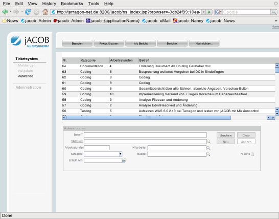
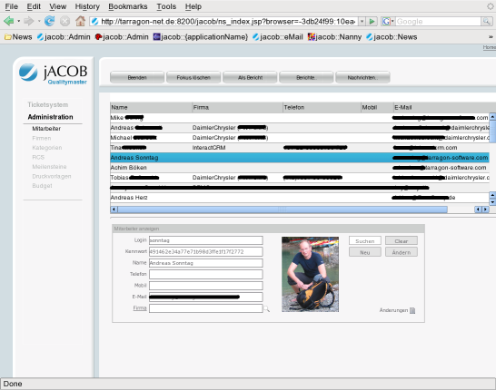
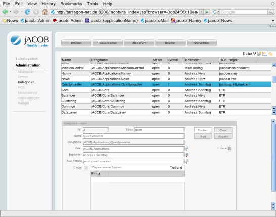
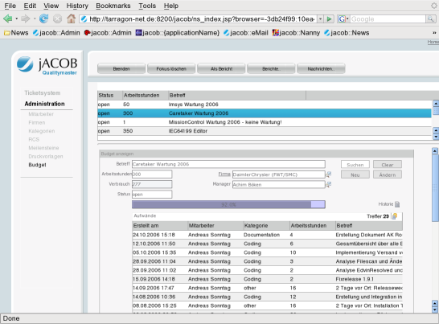

About the Open-jACOB VerSide ApplicationOpen-jACOB VerSide is a light weight Defect Tracker (Very Simple Defect tracker). You can use them as starter kit for your own Defect Tracker,Q: Why only a starter kit and not a complete DefectTracker? A: There is a lot of very good defect tracker as free available. BUT it is not easy to customize or integrate them in your business workflow. With jacob.Verside you have a good starting point to create your own DefectTracker which fits best to your requirements. |
 Contact: info AT openjacob DOT org
|
Quick Links |